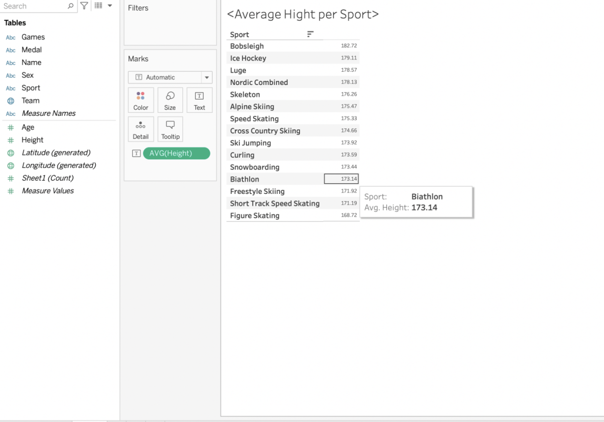
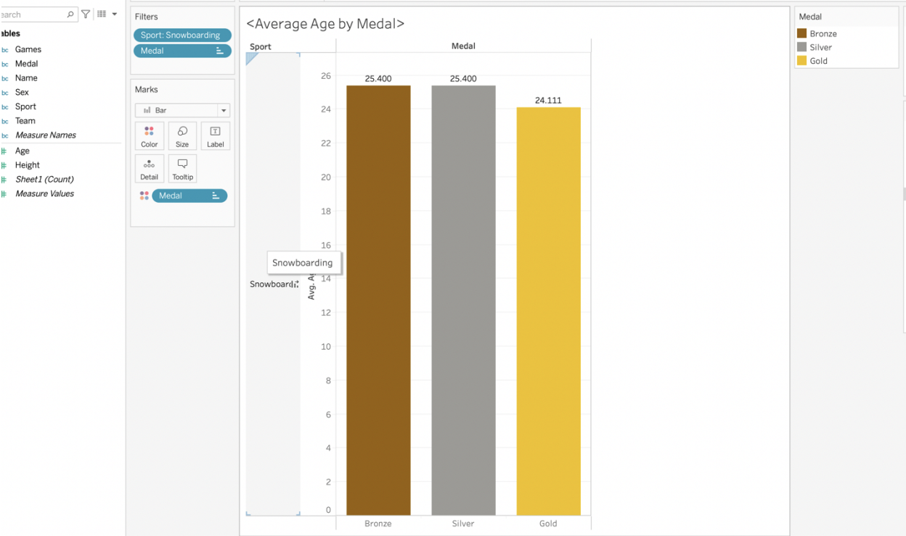
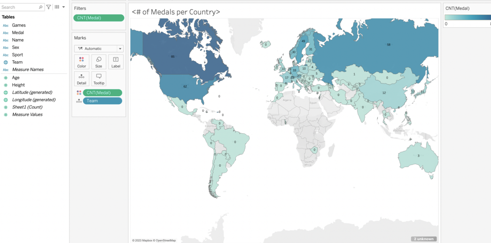

These projects were done in my Quantitative Methods in the Social Sciences (QMSS) 201 class at the University of Michigan. A big part of this course was learning to use Tableau and how to represent data through visualizations.
I was asked to create three charts in Tableau using this data  from the 2014 Sochi Winter Olympic Games.
from the 2014 Sochi Winter Olympic Games.
For the first chart I needed to create a crosstab/table looking at the relationship between the type of sport and average height.
For the second chart I to creat a bar chart that looks at the average age by medal type just for snowboarding.
For the third chart I needed to creat a geographical chart showing the number of medals by country.
In this project I was asked to create 4 charts in Tableu using two different data sets, the first one on March Madness 538 ratings and the second one on March Madness viewership data.
I was asked to do xyz
Here are my results
My final slide show looked like this